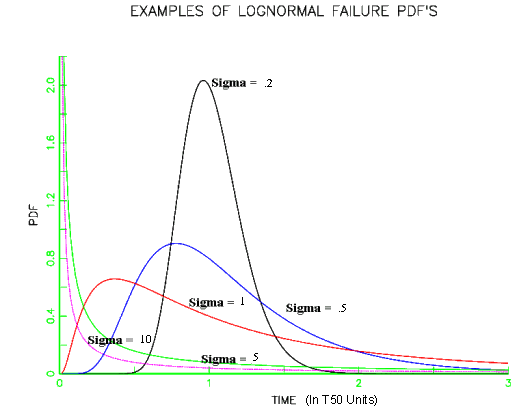
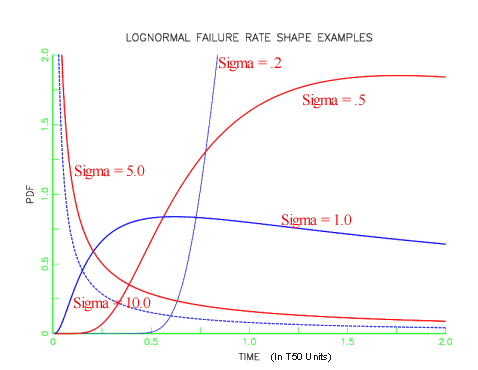

|
8.
Assessing Product Reliability
8.1. Introduction 8.1.6. What are the basic lifetime distribution models used for non-repairable populations?
|
|||
| Lognormal Formulas and relationship to the normal distribution | Formulas and Plots
The lognormal life distribution, like the Weibull, is a very flexible model that can empirically fit many types of failure data. The two-parameter form has parameters \(\sigma\) is the shape parameter and \(T_{50}\) is the median (a scale parameter). Note: If time to failure, \(t_f\), has a lognormal distribution, then the (natural) logarithm of time to failure has a normal distribution with mean \(\mu\) = ln \(T_{50}\) and standard deviation \(\sigma\). This makes lognormal data convenient to work with; just take natural logarithms of all the failure times and censoring times and analyze the resulting normal data. Later on, convert back to real time and lognormal parameters using \(\sigma\) as the lognormal shape and \(T_{50} = e^\mu\) as the (median) scale parameter. Below is a summary of the key formulas for the lognormal. $$ \begin{array}{ll} \mbox{PDF:} & f(t) = \frac{1}{\sigma t \sqrt{2 \pi}} \, e^{- \left( \displaystyle{\frac{1}{2 \sigma^2}} \right) \left( \mbox{ln } \displaystyle{t} - \mbox{ln } \displaystyle{T_{50}} \right)^2 } \\ & \\ \mbox{CDF:} & F(t) = \int_{0}^{T} \frac{1}{\sigma t \sqrt{2 \pi}} \, e^{- \left( \displaystyle{\frac{1}{2 \sigma^2}} \right) \left( \mbox{ln } \displaystyle{t} - \mbox{ln } \displaystyle{T_{50}} \right)^2} dt \\ & \\ & F(t) = \Phi \left( \frac{\mbox{ln }t - \mbox{ln } T_{50}}{\sigma}\right) \\ & \\ & \Phi(z) \mbox{ denotes the standard normal CDF.}\\ & \\ \mbox{Reliability:} & R(t) = 1-F(t) \\ & \\ \mbox{Failure Rate:} & h(t) = \frac{f(t)}{R(t)} \\ & \\ \mbox{Mean:} & T_{50} \, e^{\frac{1}{2} \sigma^2} \\ & \\ \mbox{Median:} & T_{50} \\ & \\ \mbox{Variance:} & T_{50}^2 \, e^{\sigma^2} \left(e^{\sigma^2} -1 \right) \end{array} $$ Note: A more general three-parameter form of the lognormal includes an additional waiting time parameter \(\theta\) (sometimes called a shift or location parameter). The formulas for the three-parameter lognormal are easily obtained from the above formulas by replacing \(t\) by \((t - \theta)\) wherever \(t\) appears. No failure can occur before \(\theta\) hours, so the time scale starts at \(\theta\) and not 0. If a shift parameter \(\theta\) is known (based, perhaps, on the physics of the failure mode), then all you have to do is subtract \(\theta\) from all the observed failure times and/or readout times and analyze the resulting shifted data with a two-parameter lognormal. Examples of lognormal PDF and failure rate plots are shown below. Note that lognormal shapes for small sigmas are very similar to Weibull shapes when the shape parameter \(\gamma\) is large and large sigmas give plots similar to small Weibull \(\gamma\)'s. Both distributions are very flexible and it is often difficult to choose which to use based on empirical fits to small samples of (possibly censored) data. |
||
| Lognormal data 'shapes' |  | ||
| Lognormal failure rate 'shapes' |  | ||
| A very flexible model that also can apply (theoretically) to many degradation process failure modes | Uses
of the Lognormal Distribution Model
A brief sketch of the theoretical arguments leading to a lognormal model follows.
Applying the Central Limit Theorem to small additive errors in the log domain and justifying a normal model is equivalent to justifying the lognormal model in real time when a process moves towards failure based on the cumulative effect of many small "multiplicative" shocks. More precisely, if at any instant in time a degradation process undergoes a small increase in the total amount of degradation that is proportional to the current total amount of degradation, then it is reasonable to expect the time to failure (i.e., reaching a critical amount of degradation) to follow a lognormal distribution (Kolmogorov, 1941).A more detailed description of the multiplicative degradation argument appears in a later section. |
||
| Lognormal probability plot |
We generated 100 random numbers from a lognormal distribution with shape
0.5 and median life 20,000. To see how well these random lognormal data
points are fit by a lognormal distribution, we generate the lognormal
probability plot shown below. Points that line up
approximately on a straight line indicates a good fit to a lognormal
(with shape 0.5). The time that corresponds to the (normalized) \(x\)-axis \(T_{50}\)
of 1 is the estimated \(T_{50}\)
according to the data. In this case it is close to 20,000, as expected.
Functions for computing lognormal distribution PDF values, CDF values, failure rates, and for producing probability plots, are found in both Dataplot code and R code. |
||